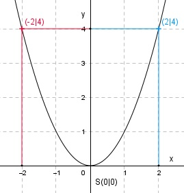

Aufgabe 1 y = f(x) = x2 Wertetabelle: x -2 -1 0 1 2 y 4 1 0 1 4 Es ist die nach oben geöffnete Normalparabel, weil die Zahl vor dem x2 positiv (nach oben geöffnet) und gleich 1 (Normalparabel) ist. Sie ist symmetrisch zur y-Achse und hat ihren Scheitelpunkt S, den tiefsten Punkt, bei S(0|0). 